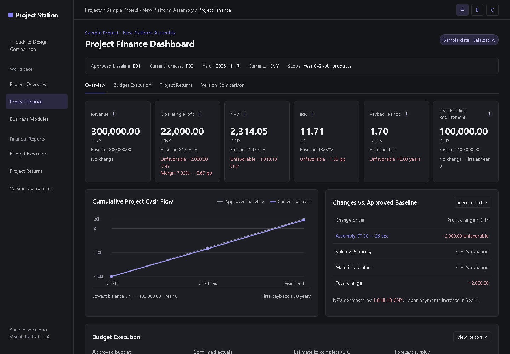
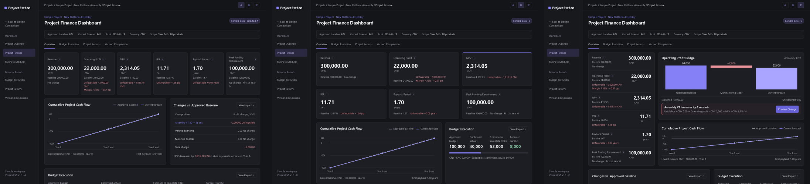

Project Station · P02-A-v1.1-en · November 17, 2026
Design A selected
Budget and variance layout, with English interface text and financial metrics.
Open Selected Design A
Shared sample scenario
Assembly cycle time increases from 30 to 36 seconds. Operating profit changes from CNY 24,000 to CNY 22,000. NPV changes from CNY 4,132.23 to CNY 2,314.05.
The dashboard, metric definitions, reports and preview use English. Baseline B01 and forecast F02 use the same fictional inputs across all three layouts.
Layout comparison
A selected · B and C retained for reference